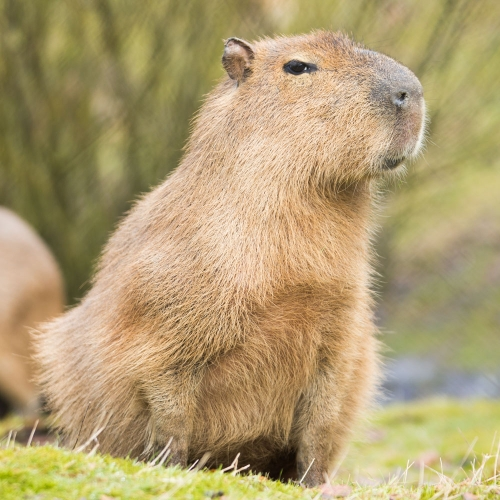

Greater Capybara
The greater capybara is in the same genus as the lesser capybara, but adult proper capybaras tend to weigh much mrore than the lesser capybara. They can weigh up to 200 pounds!

Lesser Capybara
The lesser capybara closely resembles the capybara but adult lesser capybaras typically weigh up to about 62 pounds. This species is reported to be common in Panama, but rare in Venezuela.